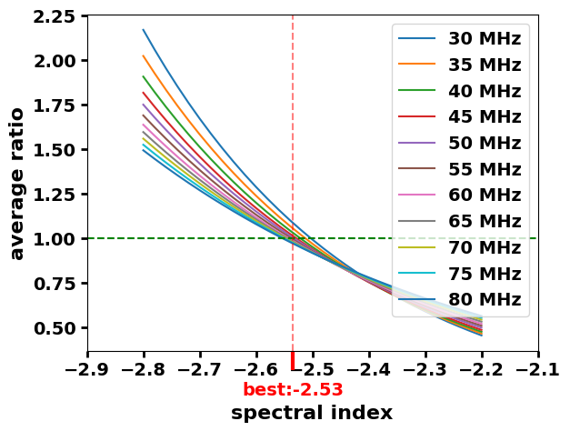

Haslam index¶
[1]:
from healpy.newvisufunc import projview
from healpy.rotator import Rotator
import healpy as hp
import traceback
from pylfmap import LFmap
from SSM import SSM
import pandas as pd
import numpy as np
import matplotlib.pyplot as plt
import itertools
import os
import sys
from radiocalibrationtoolkit import *
[INFO] LFmap: Import successful.
[2]:
# some global plot settings
plt.rcParams["axes.labelweight"] = "bold"
plt.rcParams["font.weight"] = "bold"
plt.rcParams['font.size'] = 16
plt.rcParams['legend.fontsize']= 14
plt.rcParams['xtick.major.width']= 2
plt.rcParams['ytick.major.width']= 2
plt.rcParams['xtick.major.size']= 5
plt.rcParams['ytick.major.size']= 5
plt.rcParams['xtick.labelsize']= 14
plt.rcParams['ytick.labelsize']= 14
[3]:
# Prepare objects
lfmap = LFmap()
lfss = LowFrequencySkyModel(freq_unit="MHz")
gsm2008 = GlobalSkyModel(freq_unit="MHz")
gsm2016 = GlobalSkyModel2016(freq_unit="MHz")
ssm = SSM()
gmoss = GMOSS()
ulsa_fdi = ULSA(index_type='freq_dependent_index')
ulsa_ci = ULSA(index_type='constant_index')
ulsa_dpi = ULSA(index_type='direction_dependent_index')
[INFO] Available frequencies are:
['10.0', '100.0', '101.0', '102.0', '103.0', '104.0', '105.0', '106.0', '107.0', '108.0', '109.0', '11.0', '110.0', '111.0', '112.0', '113.0', '114.0', '115.0', '116.0', '117.0', '118.0', '119.0', '12.0', '120.0', '121.0', '122.0', '123.0', '124.0', '13.0', '14.0', '15.0', '16.0', '17.0', '18.0', '19.0', '20.0', '21.0', '22.0', '23.0', '24.0', '25.0', '26.0', '27.0', '28.0', '29.0', '30.0', '30.1', '30.2', '30.3', '30.4', '30.5', '30.6', '30.7', '30.8', '30.9', '31.0', '31.1', '31.2', '31.3', '31.4', '31.5', '31.6', '31.7', '31.8', '31.9', '32.0', '32.1', '32.2', '32.3', '32.4', '32.5', '32.6', '32.7', '32.8', '32.9', '33.0', '33.1', '33.2', '33.3', '33.4', '33.5', '33.6', '33.7', '33.8', '33.9', '34.0', '34.1', '34.2', '34.3', '34.4', '34.5', '34.6', '34.7', '34.8', '34.9', '35.0', '35.1', '35.2', '35.3', '35.4', '35.5', '35.6', '35.7', '35.8', '35.9', '36.0', '36.1', '36.2', '36.3', '36.4', '36.5', '36.6', '36.7', '36.8', '36.9', '37.0', '37.1', '37.2', '37.3', '37.4', '37.5', '37.6', '37.7', '37.8', '37.9', '38.0', '38.1', '38.2', '38.3', '38.4', '38.5', '38.6', '38.7', '38.8', '38.9', '39.0', '39.1', '39.2', '39.3', '39.4', '39.5', '39.6', '39.7', '39.8', '39.9', '40.0', '40.1', '40.2', '40.3', '40.4', '40.5', '40.6', '40.7', '40.8', '40.9', '41.0', '41.1', '41.2', '41.3', '41.4', '41.5', '41.6', '41.7', '41.8', '41.9', '42.0', '42.1', '42.2', '42.3', '42.4', '42.5', '42.6', '42.7', '42.8', '42.9', '43.0', '43.1', '43.2', '43.3', '43.4', '43.5', '43.6', '43.7', '43.8', '43.9', '44.0', '44.1', '44.2', '44.3', '44.4', '44.5', '44.6', '44.7', '44.8', '44.9', '45.0', '45.1', '45.2', '45.3', '45.4', '45.5', '45.6', '45.7', '45.8', '45.9', '46.0', '46.1', '46.2', '46.3', '46.4', '46.5', '46.6', '46.7', '46.8', '46.9', '47.0', '47.1', '47.2', '47.3', '47.4', '47.5', '47.6', '47.7', '47.8', '47.9', '48.0', '48.1', '48.2', '48.3', '48.4', '48.5', '48.6', '48.7', '48.8', '48.9', '49.0', '49.1', '49.2', '49.3', '49.4', '49.5', '49.6', '49.7', '49.8', '49.9', '50.0', '50.1', '50.2', '50.3', '50.4', '50.5', '50.6', '50.7', '50.8', '50.9', '51.0', '51.1', '51.2', '51.3', '51.4', '51.5', '51.6', '51.7', '51.8', '51.9', '52.0', '52.1', '52.2', '52.3', '52.4', '52.5', '52.6', '52.7', '52.8', '52.9', '53.0', '53.1', '53.2', '53.3', '53.4', '53.5', '53.6', '53.7', '53.8', '53.9', '54.0', '54.1', '54.2', '54.3', '54.4', '54.5', '54.6', '54.7', '54.8', '54.9', '55.0', '55.1', '55.2', '55.3', '55.4', '55.5', '55.6', '55.7', '55.8', '55.9', '56.0', '56.1', '56.2', '56.3', '56.4', '56.5', '56.6', '56.7', '56.8', '56.9', '57.0', '57.1', '57.2', '57.3', '57.4', '57.5', '57.6', '57.7', '57.8', '57.9', '58.0', '58.1', '58.2', '58.3', '58.4', '58.5', '58.6', '58.7', '58.8', '58.9', '59.0', '59.1', '59.2', '59.3', '59.4', '59.5', '59.6', '59.7', '59.8', '59.9', '60.0', '60.1', '60.2', '60.3', '60.4', '60.5', '60.6', '60.7', '60.8', '60.9', '61.0', '61.1', '61.2', '61.3', '61.4', '61.5', '61.6', '61.7', '61.8', '61.9', '62.0', '62.1', '62.2', '62.3', '62.4', '62.5', '62.6', '62.7', '62.8', '62.9', '63.0', '63.1', '63.2', '63.3', '63.4', '63.5', '63.6', '63.7', '63.8', '63.9', '64.0', '64.1', '64.2', '64.3', '64.4', '64.5', '64.6', '64.7', '64.8', '64.9', '65.0', '65.1', '65.2', '65.3', '65.4', '65.5', '65.6', '65.7', '65.8', '65.9', '66.0', '66.1', '66.2', '66.3', '66.4', '66.5', '66.6', '66.7', '66.8', '66.9', '67.0', '67.1', '67.2', '67.3', '67.4', '67.5', '67.6', '67.7', '67.8', '67.9', '68.0', '68.1', '68.2', '68.3', '68.4', '68.5', '68.6', '68.7', '68.8', '68.9', '69.0', '69.1', '69.2', '69.3', '69.4', '69.5', '69.6', '69.7', '69.8', '69.9', '70.0', '70.1', '70.2', '70.3', '70.4', '70.5', '70.6', '70.7', '70.8', '70.9', '71.0', '71.1', '71.2', '71.3', '71.4', '71.5', '71.6', '71.7', '71.8', '71.9', '72.0', '72.1', '72.2', '72.3', '72.4', '72.5', '72.6', '72.7', '72.8', '72.9', '73.0', '73.1', '73.2', '73.3', '73.4', '73.5', '73.6', '73.7', '73.8', '73.9', '74.0', '74.1', '74.2', '74.3', '74.4', '74.5', '74.6', '74.7', '74.8', '74.9', '75.0', '75.1', '75.2', '75.3', '75.4', '75.5', '75.6', '75.7', '75.8', '75.9', '76.0', '76.1', '76.2', '76.3', '76.4', '76.5', '76.6', '76.7', '76.8', '76.9', '77.0', '77.1', '77.2', '77.3', '77.4', '77.5', '77.6', '77.7', '77.8', '77.9', '78.0', '78.1', '78.2', '78.3', '78.4', '78.5', '78.6', '78.7', '78.8', '78.9', '79.0', '79.1', '79.2', '79.3', '79.4', '79.5', '79.6', '79.7', '79.8', '79.9', '80.0', '81.0', '82.0', '83.0', '84.0', '85.0', '86.0', '87.0', '88.0', '89.0', '90.0', '91.0', '92.0', '93.0', '94.0', '95.0', '96.0', '97.0', '98.0', '99.0']
None
[INFO] To generate different ones use LFmap.generate_new_frequencies(your new frequency).
[4]:
spectral_incides = np.linspace(-2.8,-2.2,31)
frequency_range = np.arange(30, 85, 5)
# frequency_MHz = 45
diff_dict = {}
for frequency_MHz in frequency_range:
lfmap_map = hp.rotator.Rotator.rotate_map_pixel(
Rotator(coord=["C", "G"]), lfmap.generate(frequency_MHz)
)
lfmap_map = lfmap.generate(frequency_MHz)
lfss_map = lfss.generate(frequency_MHz)
gsm2008_map = gsm2008.generate(frequency_MHz)
gsm2016_map = gsm2016.generate(frequency_MHz)
ssm_map = ssm.generate(frequency_MHz)
gmoss_map = gmoss.generate(frequency_MHz)
ulsa_fdi_map = ulsa_fdi.generate(frequency_MHz)
ulsa_ci_map = ulsa_ci.generate(frequency_MHz)
ulsa_dpi_map = ulsa_dpi.generate(frequency_MHz)
# convert to same NSIDE
new_nside = 64
lfmap_map_N = hp.ma(hp.pixelfunc.ud_grade(lfmap_map, new_nside))
lfss_map_N = hp.ma(hp.pixelfunc.ud_grade(lfss_map, new_nside))
gsm2008_map_N = hp.ma(hp.pixelfunc.ud_grade(gsm2008_map, new_nside))
gsm2016_map_N = hp.ma(hp.pixelfunc.ud_grade(gsm2016_map, new_nside))
ssm_map_N = hp.ma(hp.pixelfunc.ud_grade(ssm_map, new_nside))
gmoss_map_N = hp.ma(hp.pixelfunc.ud_grade(gmoss_map, new_nside))
ulsa_fdi_map_N = hp.ma(hp.pixelfunc.ud_grade(ulsa_fdi_map, new_nside))
map_dict = {
"LFSS": lfss_map_N,
"GSM08": gsm2008_map_N,
"GSM16": gsm2016_map_N,
"LFmap": lfmap_map_N,
"SSM": ssm_map_N,
"GMOSS": gmoss_map_N,
"ULSA": ulsa_fdi_map_N,
}
mean_diffs_list = []
for spectral_index in spectral_incides:
haslam = HaslamSkyModel(freq_unit="MHz", spectral_index=spectral_index)
haslam_map = haslam.generate(frequency_MHz)
haslam_map_N = hp.ma(hp.pixelfunc.ud_grade(haslam_map, new_nside))
diff = []
for key in map_dict:
diff.append(np.sum(haslam_map_N)/np.sum(map_dict[key]))
mean_diffs_list.append(np.mean(diff))
diff_dict[frequency_MHz] = mean_diffs_list
[INFO] Outputing map at 30.0 MHz
[INFO] Outputing map at 30.0 MHz
WARNING: AstropyDeprecationWarning: "verbose" was deprecated in version 1.15.0 and will be removed in a future version. [pylfmap.pylfmap]
WARNING: AstropyDeprecationWarning: "verbose" was deprecated in version 1.15.0 and will be removed in a future version. [pygdsm.haslam]
[INFO] Outputing map at 35.0 MHz
[INFO] Outputing map at 35.0 MHz
[INFO] Outputing map at 40.0 MHz
[INFO] Outputing map at 40.0 MHz
[INFO] Outputing map at 45.0 MHz
[INFO] Outputing map at 45.0 MHz
[INFO] Outputing map at 50.0 MHz
[INFO] Outputing map at 50.0 MHz
[INFO] Outputing map at 55.0 MHz
[INFO] Outputing map at 55.0 MHz
[INFO] Outputing map at 60.0 MHz
[INFO] Outputing map at 60.0 MHz
[INFO] Outputing map at 65.0 MHz
[INFO] Outputing map at 65.0 MHz
[INFO] Outputing map at 70.0 MHz
[INFO] Outputing map at 70.0 MHz
[INFO] Outputing map at 75.0 MHz
[INFO] Outputing map at 75.0 MHz
[INFO] Outputing map at 80.0 MHz
[INFO] Outputing map at 80.0 MHz
[5]:
fig, ax = plt.subplots()
best = []
for key in diff_dict:
ax.plot(spectral_incides, np.asarray(diff_dict[key]), label='{} MHz'.format(key))
best.append(spectral_incides[np.argmin( np.abs(np.asarray(diff_dict[key])-1 ))])
ax.axes.axhline(1, linestyle='--', color='g')
# ax.axes.axvspan(np.min(best), np.max(best), alpha=0.5, color='g')
ax.axes.axvline(np.mean(best), alpha=0.5, color='r', linestyle='--')
ax.set_xlabel('spectral index')
ax.set_ylabel('average ratio')
ax.legend()
plt.draw() # this is required, or the ticklabels may not exist (yet) at the next step
labels = [w.get_text() for w in ax.get_xticklabels()]
locs=list(ax.get_xticks())
labels+=['\nbest:{:.2f}'.format(np.mean(best))]
locs+=[np.mean(best)]
ax.set_xticklabels(labels)
ax.set_xticks(locs)
plt.gca().get_xticklabels()[-1].set_color('red')
ax.xaxis.get_major_ticks()[-1].tick1line.set_markeredgewidth(3)
ax.xaxis.get_major_ticks()[-1].tick1line.set_markersize(15)
ax.xaxis.get_major_ticks()[-1].tick1line.set_markeredgecolor("red")
plt.draw()
print('Best: {}'.format(np.mean(best)))
Best: -2.534545454545454
/tmp/ipykernel_143964/2770450199.py:20: UserWarning: FixedFormatter should only be used together with FixedLocator
ax.set_xticklabels(labels)
